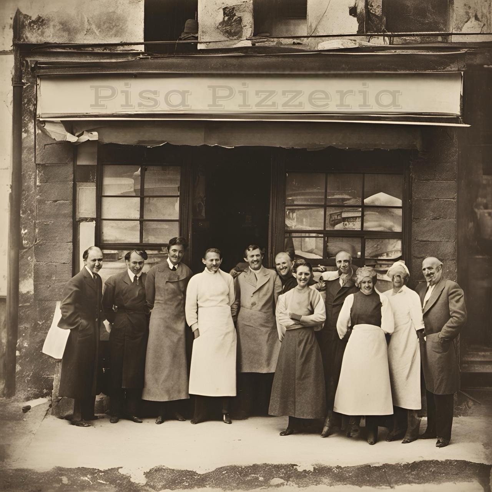

Nossa História
A Pisa Pizza começou nas colinas de Pisa, Itália, fundada por Sr. Michelli e Antonieta Corleonni. Reconhecida por suas receitas tradicionais, a pizzaria conquistou a comunidade local. Por volta do ano de 1950 a família chegou em São Paulo e deu inicio a pizzaria para manter a tradicao viva na familia. Hoje, a pizzaria continua oferecendo qualidade e sabor autênticos, convidando todos a experimentar a verdadeira pizza italiana.